Cage page: making a high-converting page work harder
A high-performing Cage page was converting well, but its structure and visual language no longer reflected the product it was selling.
33%
Higher conversion than the core project page
60%
Lower cost per lead than the core page
Role
Principal Product Designer
Platform
Web (Desktop + Mobile), Android
Company
Housing.com
Status
In development
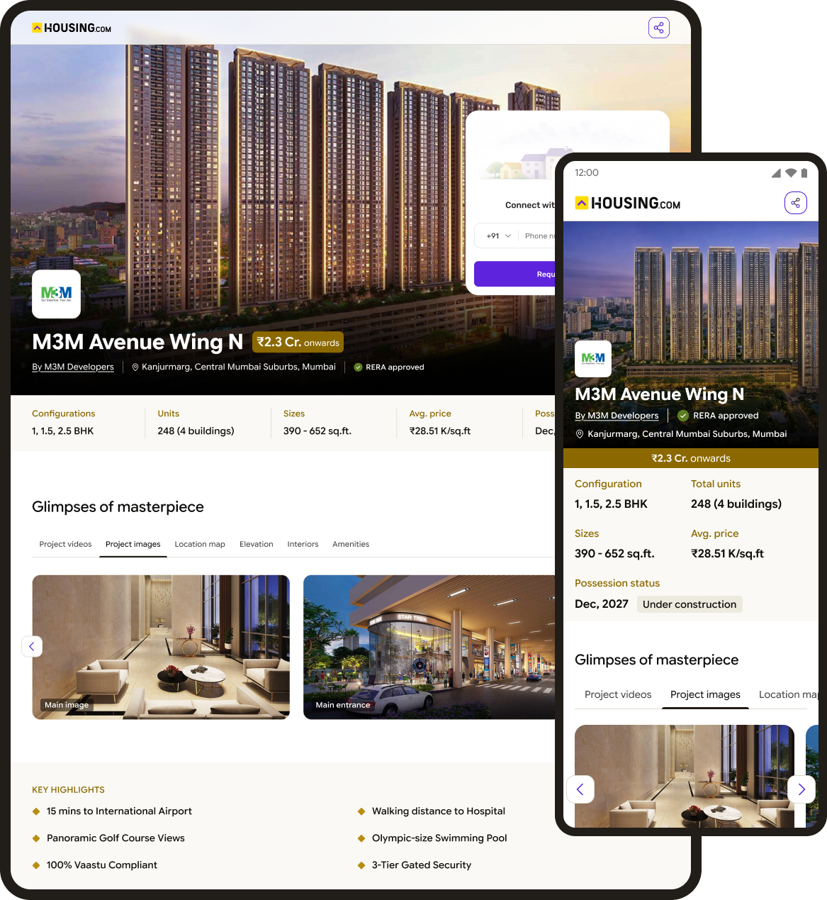
Cage pages are focused project landing pages built to keep users within a single project journey.
By limiting navigation, they create a more intentional path to conversion than standard Project Detail Pages (PDPs). They power web and app marketing campaigns and consistently outperform PDPs in driving new project (NP) conversions.
The page converted. The experience didn't sell it.
Despite higher acquisition costs, Cage pages delivered a 60% lower cost per lead. The opportunity was to turn that efficiency into a paid offering for select developers, but the page first needed to feel as valuable as the product it sold.
Would a developer pay for it?It converted well, but didn’t look like a premium product.
Does it reflect the brand?The UI predated Housing.com’s new brand language.
Can a buyer decide from it?Dense text and a buried gallery slowed buyers down.
Problem space
Why the old page held it back
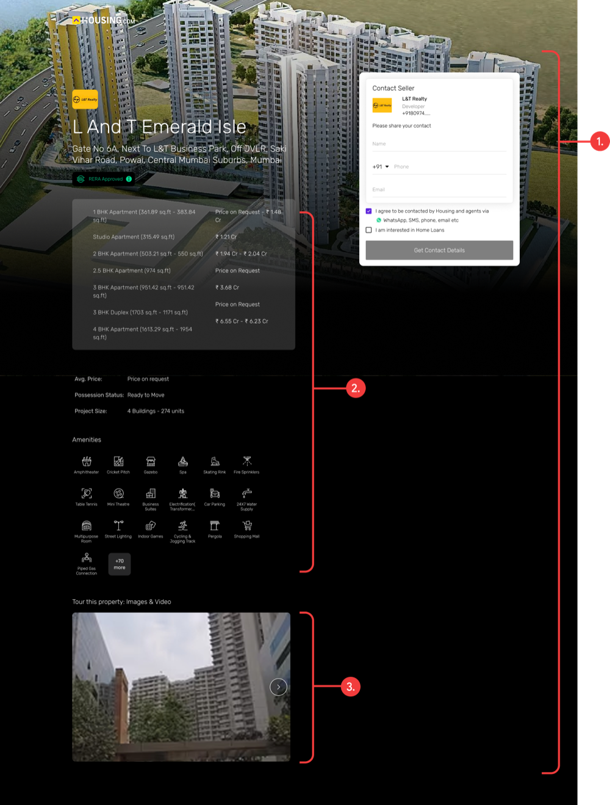
01Off-brand and not premium
The UI predated Housing.com's new brand language, and its look contradicted the value the page was meant to deliver.
02Too much text
Useful information was packed into dense blocks that were hard for a buyer to take in.
03Images buried at the bottom
Buyers spend a lot of time looking at property photos, yet the gallery sat in the very last section.
02The solution
Rebuilt the template around what a buyer needs, in the order they need it
Each section was designed to reduce a layer of uncertainty while building desire and confidence.
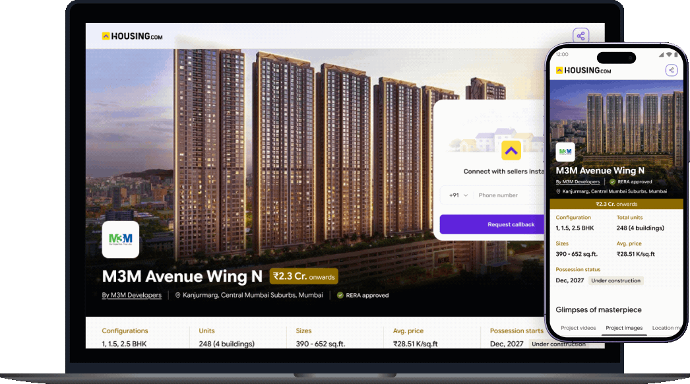
01
A more intentional first impression
At this stage, buyers aren't hunting for exact unit prices. They want to know whether the project fits their budget and what it offers. The hero needed to answer that at a glance.
Before
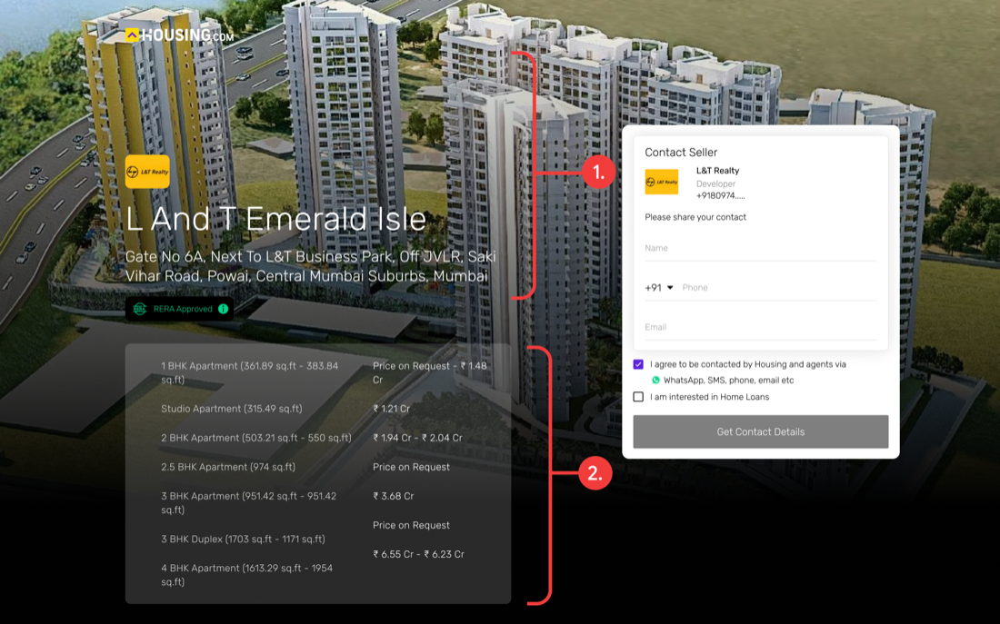
The background image drained the contrast out of the project name and address. Below it, a long, complicated price breakdown answered a question nobody was asking yet.
After
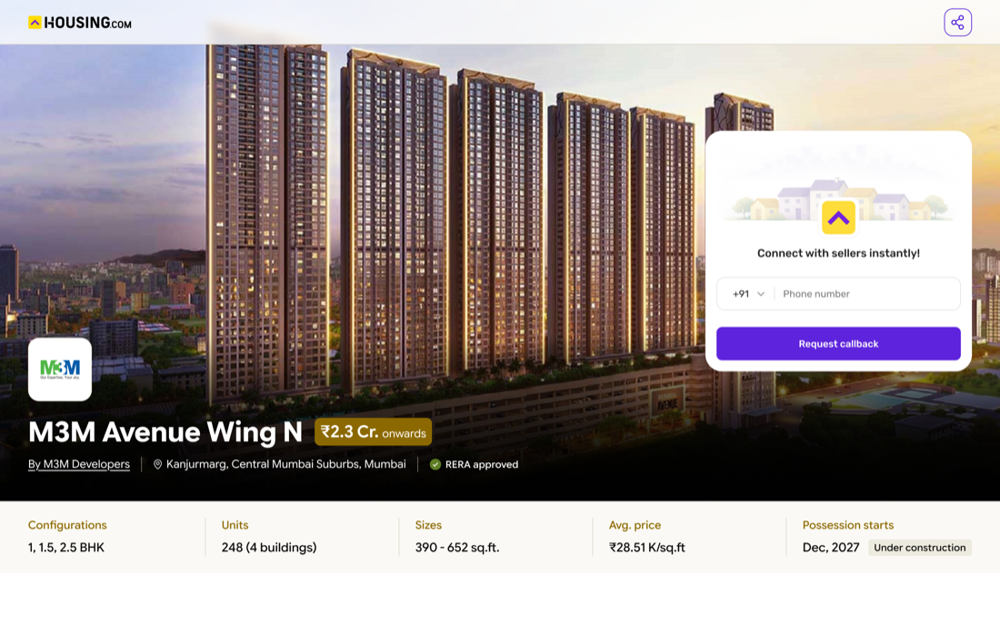
The image sets the mood without overpowering the details. Name, price range and configurations sit in a clear hierarchy, so a visitor sees the whole project at once.
02
Matching information to intent
The old page told a three-part story. I expanded it into a complete picture of the project, and gave each part of the page a call to action that fits what the visitor is doing there.
Before · 3 sections
Hero Sticky lead form
Configuration & price table
Project gallery
After · 8 sections
Hero
Project gallery CTA
Key highlights
Amenities CTA
Similar projects
Location & connectivity
About the developer Trust
Footer
03
Letting the images do their job
For a premium project, photos are the pitch. I moved the gallery up the page and gave it the viewing experience it deserved.
Before
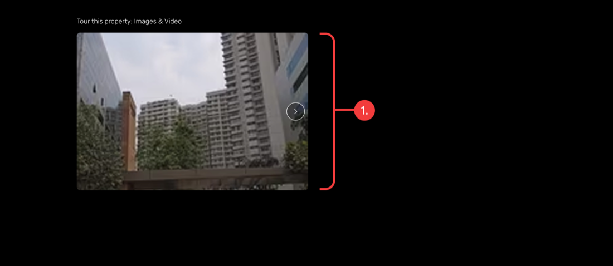
The gallery didn't open into a dedicated viewer and didn't show how many images there were, which left a poor impression of an otherwise premium project.
After
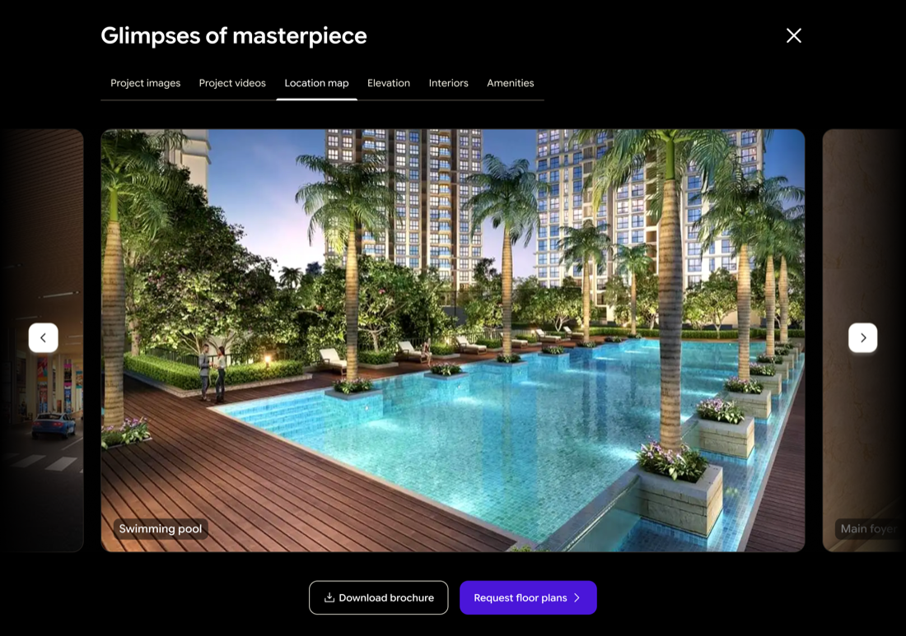
Carousels for browsing, plus a dedicated lightbox so photos and videos can be viewed in full, where their visual impact is strongest.
03What I did
A visual-first approach to a decision-making experience
I studied more than 20 platforms to see which patterns were emerging in premium project pages, then checked every section against what the business actually needed.
Before diving in, I asked myself two questions:
How might we · 01How might we make the project page compelling enough to spark user interest and encourage users to explore and pursue a project?
How might we · 02How might we create natural opportunities for lead generation within the experience, without disrupting the user journey or making conversion feel transactional?
Visual-first approach
I treated the project page as a decision-making experience, not just an information repository.
The journey was structured to progressively move users from inspiration to intent, answering key questions along the way.
Inspiration
What does it look like?
Consideration
How does it fit into my life?
Can I trust the developer?
Intent
Am I ready to take the next step?
01
Competitor analysis
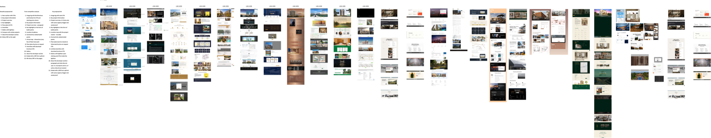
An analysis of the competitors in the market gave us the following insights:
Key takeaway
Premium pages didn’t say more. They showed more, and asked at the right moment.
Big imagery and a full view of the project built interest. Lead capture sat where that interest peaked.
01User experience
A full view of the project
Every competitor's cage page gave an overall view of the project's offerings, with sections like amenities, location & connectivity and key highlights.
02User experience
Grand, big imagery
They relied heavily on grand and big imagery to create visual appeal.
03
Lead capture at key moments
Strategically placed CRF entry points turned key information moments into lead-generation opportunities. Users got a glimpse of high-value project information, while deeper details were unlocked upon conversion, balancing user value and business goals.
02
Design challenges while iterating wireframes
01
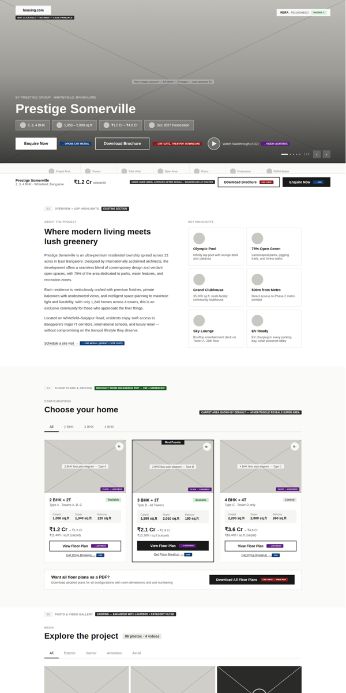
02
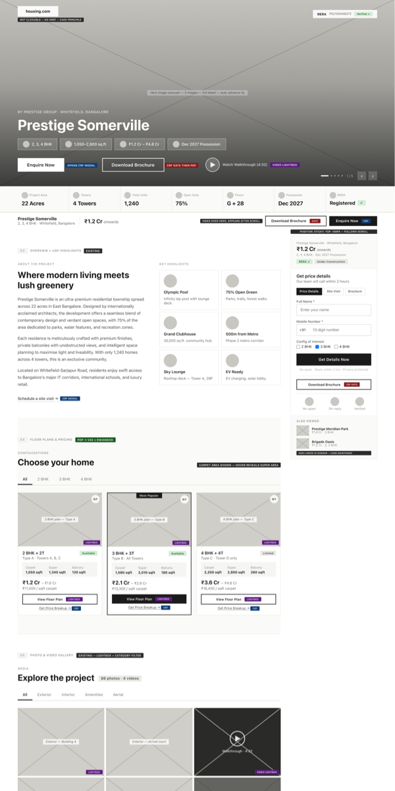
03
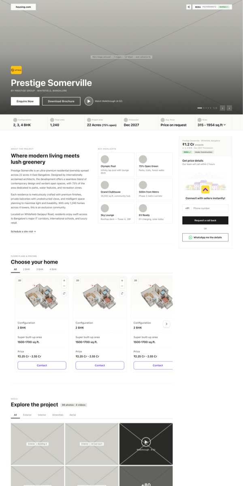
04
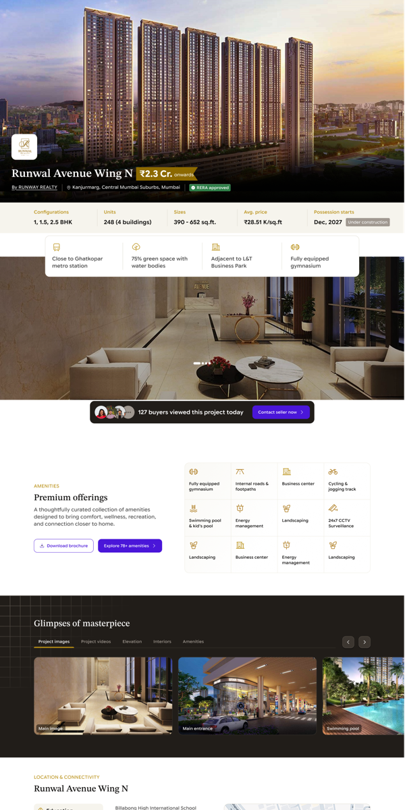
05
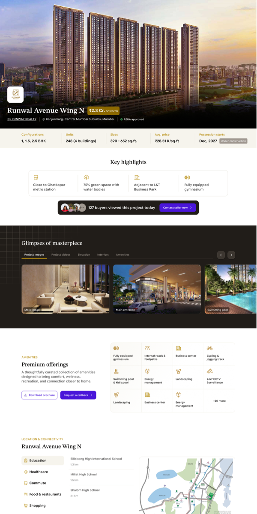
The roadblocks I hit while exploring wireframes & iterations were:
Challenge 01
Content vs. conciseness
The page was quickly becoming too long.
Stakeholder discussions helped prioritise the non-negotiable information and strip back what could be deferred, keeping the experience distinct from a conventional PDP.
Challenge 02
Premium vs. system consistency
The existing design system initially made the template feel too familiar.
We explored colour, layout and visual hierarchy to push the boundaries of the system while maintaining enough consistency to preserve usability and brand coherence.
04The result
A premium template that can be sold as a product
A full redesign on the Bricks design system: a better experience for buyers, and an asset Housing.com can offer developers as a paid, enhanced package.
Still in development, so impact can’t be measured yet. Results will follow after launch.
Reflection
Designing for two customers at once
Buyers needed clarity and confidence. Developers needed to see something worth paying for. The decisions that served one usually served the other.
01Premium comes from restraint
Most of the gain came from hierarchy, not decoration: deciding what a visitor needs first and moving everything else out of the way.
02Structure creates places to convert
Breaking the page into purposeful sections made room for calls to action that match intent, rather than one form chasing the user.
03Lead with what people came for
Buyers come for the visuals. Moving the gallery up and giving it a proper viewer was the simplest, most visible upgrade.
What’s next
From a redesign to a product
The next phase takes the template to developers and tests the bets we made.
01
Offer it as a paid package
Roll the premium template out to select developers as an enhanced listing.
02
Measure the CTAs
Once live, check whether intent-led CTAs bring more leads without interrupting the journey.
03
Learn from the gallery
See how buyers use the full-screen viewer, and what else deserves a place higher up the page.